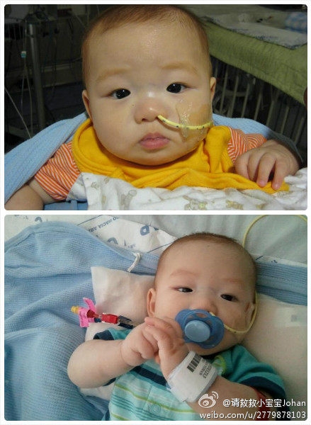

转发微博@生活-读书-新知:继北京出台95岁老人看病不要钱后，又有城市宣布100岁可免费登泰山，110岁放宽生2胎政策，120岁老人可免费分配住房，130岁可取消一夫一妻限制。希望各位童鞋注意保重身体，后面的好日子在等着咱们啊！
说起来图书终究是便宜。在美国，一本普通杂书十几二十几，最多三十几美元，其实就是一顿饭钱。而把这本精神食粮吃下去，至少够吃5-10顿饭。这个比例在中国也差不多吧。但大家还都是在图书上这么吝啬，在吃饭上这么舍得。
西方的双重标准：他们将达赖奉若神明，却对他当年那个政教合一专制还农奴制的政权置若罔闻。现在他们喜欢说西藏宗教不自由，但他们从来不讨论达赖当政时的西藏，宗教自由吗？ //@Alexx_Jiang: //@司马平邦:毛主席不再有了，只求我们自己做事对得起良心，对得起自己属于那个最多人数的阶级。@刘毅然:这些天一位藏族老阿妈常来现场看我拍戏，她拉着我时我感到她的手很粗糙，细细一看，所有的骨节都是扭曲的。阿妈告诉我，那是给头人干活留下的！挤牦牛奶煨桑打青稞，她说那时候很苦，她说毛主席好！这让我想起在无论在西藏、青海还是香格里拉，总看到许多藏族乡亲家里都挂毛主席像，这才是民心是天下！
欧洲北方日耳曼国家和南方拉丁国家的性格的差别，就如同德国荷兰英国的北方足球和意大利西班牙葡萄牙的拉丁足球之间的足球风格一样。一个是粗犷硬朗有纪律性，一个是细腻灵巧有浪漫气质。哪一派足球会在今年的欧洲杯占上风？
纵观欧洲的历史，英德荷为首的北方日耳曼语地区，以及以意西希腊为首的南方拉丁和希腊语地区之间的互动是欧洲历史的主基调。从日耳曼人入侵罗马帝国，到新教与天主教之争，再到荷兰英国与热那亚威尼斯西班牙葡萄牙的世界霸主之争。最新的发展是现在的欧债问题，南方的欠债国和北方的富国之间的互动。
在美国因医疗费用而破产的人中，有78%是有医疗保险的。美国的医疗保险真是挡不住大病的。美国这么一个富有的国家，无法彻底解决即使是中产阶级的医疗后顾之忧，真是这个国家的耻辱。好好看看任何一个其他发达国家是怎么做的吧！
《经济学家》说，中国的投资率占GDP的比例是出奇高的49%，但更高的是储蓄率有51%，居民消费只占GDP的34% (我简单搜索了一下在美国这三个数字是18%，6%和70%)。中国人民看起来是勒紧裤腰带把钱存到银行支援建设了阿。
19世纪的英国，看印刷精美的旅游画册就被称为“躺椅旅游（armchair travel）”。现在的科技发展到大家可以在家里看着大屏幕里高清的世界歌词的风光片。但躺椅旅游和真正的旅行的鸿沟依然存在。大概亲身旅游的独特之处恰恰在于坐在家里无法获得的那些经历吧。
//@王也strikes: 我的一位同事年仅4个月大的宝宝不幸罹患急性淋巴型白血病，急需骨髓移植。现在宝宝的父母焦急的寻找着匹配骨髓。请伸出您的援手，注册成为骨髓捐赠人！烦请各位转发，谢谢！网页链接@请救救小宝宝Johan:我四个月大的儿子刚刚诊断为急性淋巴型白血病。 现在正在接受化疗。 他属于这种病中高危型， 很快需要骨髓移植。 请伸出援助的手，注册成为骨髓捐赠人， 帮助我孩子和其它正在等待匹配捐赠的人。非常容易注册：只需要口腔里少量的颊上皮细胞或者少量的血。请访问网页网页链接。 